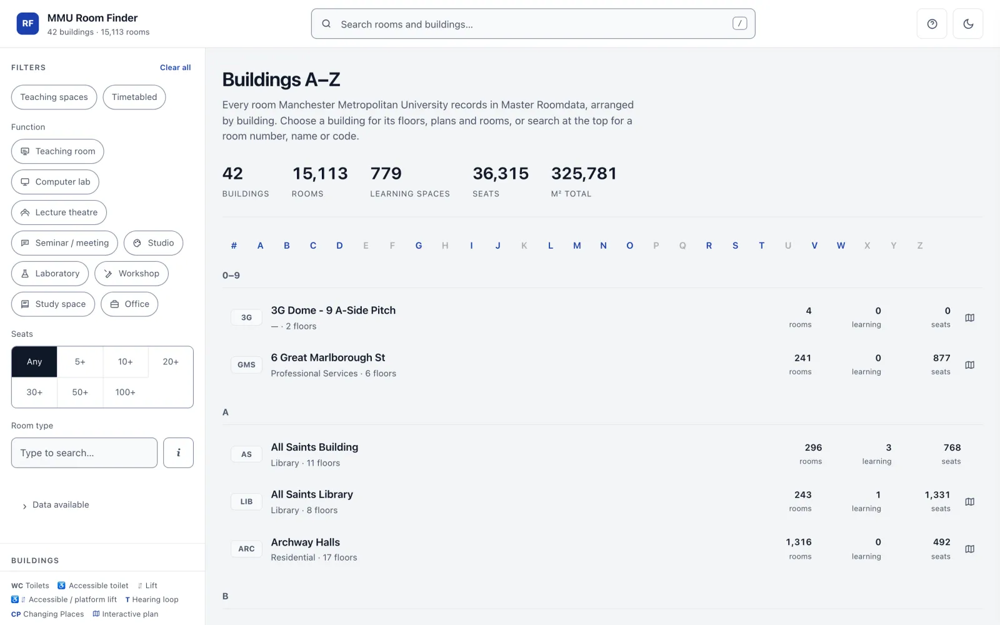

1 · The problem
Data we have on record
Every answer about our rooms exists. None of it is in one place.
Master Roomdata.xlsxIllustrator-Floor Plans/Furniture Layouts/Teaching Layouts/*.pptxUtilisation Surveys/Elevations/ · Site Plans/Answering a simple room question today means opening several of these by hand, or emailing someone who knows.
Prepared by Michail Oustamanolakis, Manchester Metropolitan University · m.oustamanolakis@mmu.ac.uk
2 · The question
Colleagues ask“Where's a 40-seat room with a computer for every student, near GM, and how is it laid out?”
Hands-on time only: the minutes people spend on the task, never the time spent waiting. Every time below is an estimate, to be replaced by the before-and-after study on slide 5.
- Solution 1Ask another colleagueMaybe they know something.Maybe ~20 min asking and following up, ~10 min of their time
- Solution 2Explore the room booking systemIt doesn't show layouts, and it expects you to book.No layouts ~45 min searching, and still no layout
- Solution 3Wander the campus, opening doorsLike a video game.Door by door ~2 hours walking between buildings
- Solution 4Submit a ticket, and waitHours, days, sometimes weeks.Hours to weeks ~10 min writing it, ~20 min Estates handling it, ~10 min follow-up
- Solution 5Use this room finderSearch, filter, open the room, see the layout.Minutes ~5 min
3 · What it does
One page that reads all of them
A single file, rebuilt in one command from the folders above. 42 buildings, 15,113 rooms, 126 floor plans you can click. Choose a view.

4 · What it found on the way
Joining the records up shows where they disagree
The build writes a reconciliation spreadsheet: every place where two sources tell a different story. It's a to-do list someone can work through. Choose a row.
Most of these are not mistakes by anyone. A layout drawing counts chairs, the timetable counts bookable seats. The point is that nobody could see the differences before.
5 · Impact, and how we'd know
Measure the problem it removes, not the clicks
- Before launch · no trackingTime to answer five real questionsFive to eight colleagues, the current way, then with the finder. Minutes per question, before and after.
- Before and after · no trackingRoom questions reaching EstatesMonthly count of "where is / what's in room X" emails and calls, now and three months after launch.
- Already countableRecords reconciledRows cleared from the reconciliation list, at source.
- Anonymous totals onlySearches, plans opened, and searches that found nothingNo cookies, no personal data. The searches that found nothing are the roadmap.
- Voluntary“Did you find what you needed?”Yes or no, with an optional comment.
WHAT IT COULD BE WORTH · MOVE THE ASSUMPTIONS
Every input is an assumption until the before-and-after study replaces it with a measurement. That study is the first thing a pilot would do.
6 · Where it could go
Long-term versions: from finding rooms to choosing them
Rooms that stand in for each other
If the room you want is taken, find the statistically similar ones. A first sketch, computed from the records we already hold: same room type, similar seats and floor area, same building first.
- GM 104Teaching room · 40 seats · 60.5 m²taken
- GM 107Same floor · 40 seats · 60.7 m²closest
- GM 231Floor 2 · 35 seats · 64.4 m²2nd
- BR 1.58Brooks · 40 seats · 60.4 m²3rd
- BR 2.28Brooks · 40 seats · 60.6 m²4th
- Rooms that complement each otherA lecture theatre with breakout rooms nearby; a studio next to a quiet room.
- Somewhere to work after classStudy rooms and free classrooms for students, for group work between sessions.
- Is it free, not just does it existLive availability from the timetable, alongside the layout.
- Step-free routes between roomsFrom the lifts, ramps and accessible doors already marked on our plans.
- Evidence for space planningWhich rooms are over- or under-used, from the 285 rooms already surveyed.
IDEAS, NOT PROMISES · EACH ONE WOULD START WITH THE PEOPLE WHO OWN THE DATA
7 · What it needs next
A prototype that works. Four decisions to make it real.
Built with Claude Code (Anthropic) from the Buildings folder. Rebuilt with one command: python3 _build/build.py
Michail Oustamanolakis · m.oustamanolakis@mmu.ac.uk